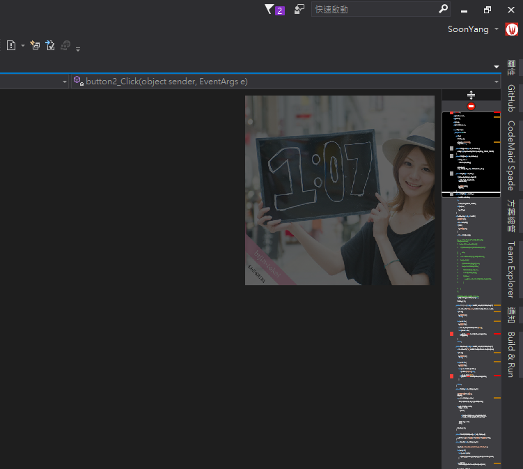
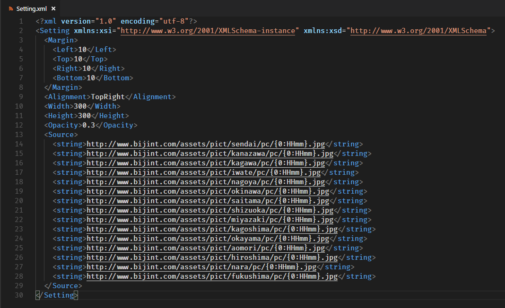
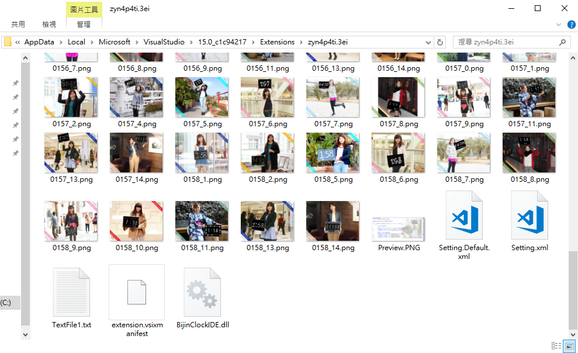

Visual Studio 擴充套件 - 美人時計 IDE
2018-05-22
忘了上次在哪個 FB 社團，看到人家討論 VS 推薦安裝哪些套件
下面留言就有人推了這個：
美人時計 IDE～～～(哆啦a夢調)
這是一個功能很簡單的套件
安裝之後打開你的 VS，再任意打開一個文件進入編輯狀態
你就會看到預設右上角，背景顯示了一張女孩子舉著目前時間板子的照片：

每過一分鐘照片就會更新一次
有時候照片中的時間會被卡掉，不過沒關係
大家裝這個套件的目的也不是真的想看時間……
圖片的大小及位置可以在設定檔自行調整，不過要找到設定檔不是很方便

你必須在以下位置找出設定檔
作者的原文是
（\AppData\Local\Microsoft\VisualStudio\{Version}\Extensions\の中のどこかにSetting.xmlがあるんじゃないかな）
(沒錯，作者是日本人)
以我自己為例，VS 版本是 Community 2017
找到的路徑長這樣：
C:\Users\Administrator\AppData\Local\Microsoft\VisualStudio\15.0_c1c94217\Extensions\zyn4p4ti.3ei

可以看到圖片也是下載到這裡
觀察了一下，這裡大概只會保留 10 分鐘左右的圖片
所以不用擔心硬碟被美女們灌爆
同一分鐘會有多張不同照片，可能是從中隨機挑一張出來顯示吧
不過就如同 這篇介紹 所言，請依照辦公室文化來調整圖片大小
賞心悅目之餘，也要注意別誤踩小人地雷囉！